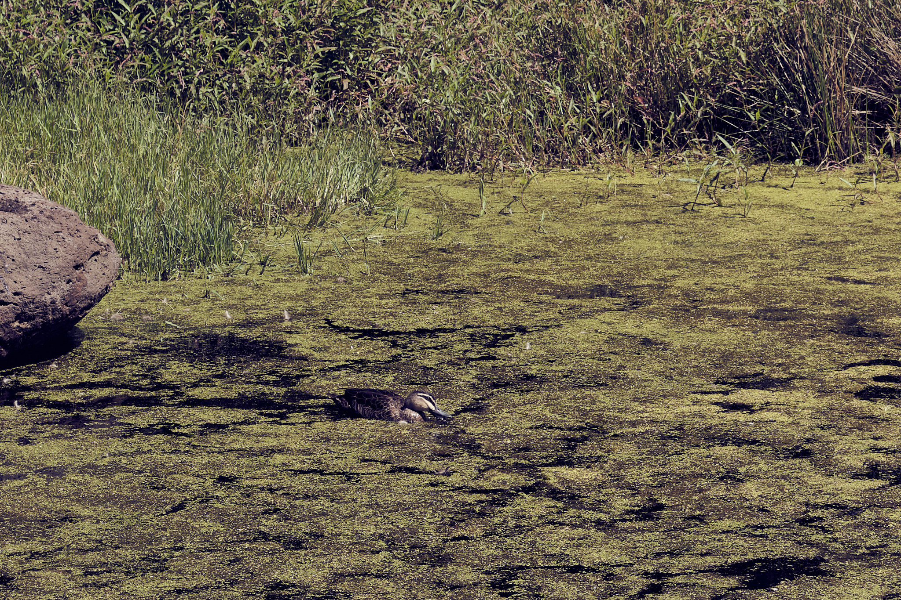

Introduction
Water has always been a reflective surface, a natural mirror that captures the surrounding world in ways unlike anything else. At Royal Park, the ponds, lakes, and wetlands provide such mirrors, amplifying the beauty of the landscape while offering a moment of calm reflection for visitors. In this post, we explore the water features of Royal Park, which not only serve as beautiful backdrops but also sustain the park’s diverse ecosystem.
The Central Lake
Description: The Central Lake is the heart of Royal Park, with its placid waters mirroring the sky above, the trees around it, and even the occasional bird soaring by. This tranquil body of water is a sanctuary for both wildlife and people, offering a peaceful space for those seeking solitude or a perfect spot for photographers trying to capture the perfect reflection. Early mornings, when the air is still, reveal a breathtaking sight—where the trees seem to stretch their branches to the sky, only to find their twin reflections on the water’s surface.


The Ornamental Ponds: A Serene Escape
Description: Scattered throughout the park are several ornamental ponds, designed not only for their beauty but also as an ecosystem for aquatic life. These ponds, with their gently rippling waters, offer an escape from the surrounding city noise. The reflections of the park’s surrounding trees create a serene mirror effect, giving visitors a peaceful place to pause. Often, you’ll spot ducks or water lilies floating serenely on the surface, adding to the magical quality of these reflective waters.
Wetlands: A Living Mirror
Description: The wetlands of Royal Park are more than just a water feature—they are a dynamic ecosystem that mirrors the health of the environment. Here, the water is not still, but rather teems with life. The reflective surface of the water acts as a mirror to the surrounding flora and fauna, capturing the subtle movement of reeds, grasses, and aquatic creatures. During certain seasons, the wetland areas become alive with color, as birds and insects flit through the water, creating ripples that momentarily distort the reflections, only to bring them back into clarity.


Conclusion
The water features in Royal Park are more than just a scenic addition—they are integral to the park's ecosystem. The ponds, lakes, wetlands, and creek create natural mirrors that reflect not only the trees and sky but also the vitality of the park itself. These bodies of water sustain life, offer peace and reflection, and provide visitors with a place to connect with nature. As you walk through Royal Park, take a moment to look into these natural mirrors—there, you’ll find a world that exists in perfect harmony, a balance of water, light, and life.